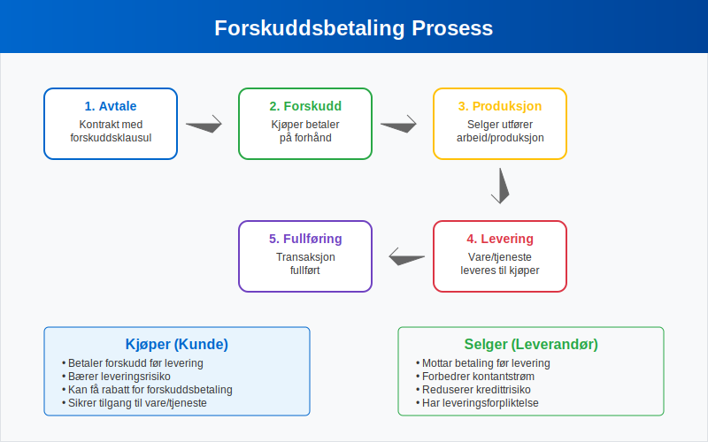
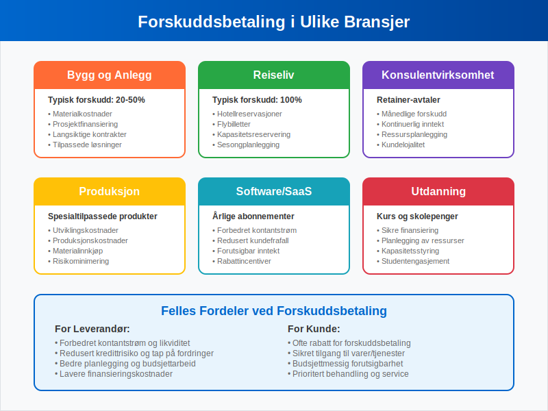
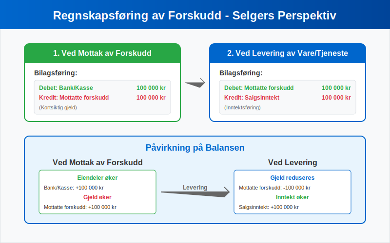
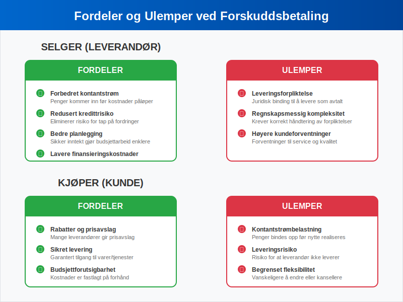

Forskuddsbetaling er en betaling som gjøres på forhånd for varer eller tjenester som skal leveres på et senere tidspunkt. Dette er en vanlig praksis i mange bransjer og representerer en viktig del av moderne forretningsdrift. Forskuddsbetalinger skaper både muligheter og utfordringer for både kjøper og selger, og krever korrekt håndtering i regnskapet.
For en oversikt over hvordan denne transaksjonen behandles i Norsk Standard Kontoplan, se Konto 1480 - Forskuddsbetaling til leverandører.
I motsetning til vanlige fakturaer hvor betaling skjer etter levering, innebærer forskuddsbetaling at kunden betaler før varen eller tjenesten er mottatt. Dette skaper en særegen regnskapsmessig situasjon som må håndteres korrekt for å oppfylle bokføringsloven.

Seksjon 1: Definisjon og Grunnleggende Prinsipper
Forskuddsbetaling, også kalt forhåndsbetaling eller prepayment, er en transaksjon hvor kjøper betaler selger før levering av varer eller tjenester. Dette skiller seg fundamentalt fra tradisjonell fakturasalg hvor betaling skjer etter levering.
Hovedkarakteristikker ved Forskuddsbetaling
- Timing: Betaling før levering
- Risiko: Kjøper bærer leveringsrisiko
- Kontantstrøm: Forbedrer selgers likviditet
- Forpliktelse: Skaper leveringsforpliktelse for selger
Forskuddsbetalinger kan være fullstendige (hele beløpet betales på forhånd) eller delvise (en del av totalbeløpet betales som forskudd). En relatert, men distinkt betalingsform er a-konto betaling, som ofte brukes for løpende tjenester med variabelt forbruk.
Seksjon 2: Forskuddsbetalinger i Ulike Bransjer
Forskuddsbetalinger brukes i mange ulike sammenhenger og bransjer. Tabellen nedenfor viser vanlige anvendelsesområder:
| Bransje | Typiske Forskuddsbetalinger | Begrunnelse |
|---|---|---|
| Bygg og anlegg | 20-50% av kontraktsum | Dekke materialkostnader og sikre prosjektfinansiering |
| Reiselivsbransjen | Hotellopphold, flybilletter | Kapasitetsreservering og sesongplanlegging |
| Konsulentvirksomhet | Månedlige retainer-avtaler | Sikre kontinuerlig inntekt og ressursplanlegging |
| Produksjon | Spesialtilpassede produkter | Dekke utviklings- og produksjonskostnader |
| Software/SaaS | Årlige abonnementer | Forbedre kontantstrøm og redusere kundefrafall |
| Utdanning | Kursavgifter og skolepenger | Sikre finansiering og planlegging |
| Forsikring | Forsikringspremie | Sikre forsikringsdekning over forsikringsperioden |

For mer om regnskapsmessig behandling av forsikringspremie, se Forsikringspremie.
Se også Konto 1700 - Forskuddsbetalte leier for mer om regnskapsmessig behandling av forskuddsbetalte leiekostnader.
Spesielle Situasjoner
I enkelte bransjer er forskuddsbetalinger nærmest obligatoriske:
- Tilpassede produkter: Når varer produseres spesielt for en kunde
- Høye materialkostnader: Prosjekter med betydelige forhåndsinvesteringer
- Sesongbaserte tjenester: Hoteller, ferieboliger og lignende
- Langsiktige prosjekter: Byggeprosjekter og konsulentoppdrag
Seksjon 3: Regnskapsføring av Forskuddsbetalinger
Korrekt regnskapsføring av forskuddsbetalinger er kritisk for å opprettholde nøyaktige finansielle rapporter og overholde bokføringsreglene.
For Selger (Mottaker av Forskudd)
Når en bedrift mottar en forskuddsbetaling, skal denne ikke umiddelbart føres som inntekt. I stedet registreres den som en forpliktelse (gjeld) siden bedriften har en leveringsforpliktelse:
Ved mottak av forskudd:
- Debet: Bank/Kasse
- Kredit: Mottatte forskudd (kortsiktig gjeld)
Ved levering av vare/tjeneste:
- Debet: Mottatte forskudd
- Kredit: Salgsinntekt

For Kjøper (Betaler av Forskudd)
Kjøper registrerer forskuddsbetalingen som en fordring eller forskuddsbetalt kostnad:
Ved betaling av forskudd:
- Debet: Forskuddsbetalte kostnader (omløpsmidler)
- Kredit: Bank/Kasse
Ved mottak av vare/tjeneste:
- Debet: Relevant kostnadskonto
- Kredit: Forskuddsbetalte kostnader
Merverdiavgift (MVA) og Forskuddsbetalinger
Forskuddsbetalinger har spesielle MVA-regler som må følges nøye:
- Utgående MVA påløper først når varen/tjenesten leveres
- Inngående MVA kan trekkes fra først ved levering
- Forskuddet alene utløser ikke MVA-plikt
For detaljert informasjon om MVA-behandling, se vår guide til avgiftsplikt MVA.
Seksjon 4: Fordeler og Ulemper
Fordeler for Selger
Forbedret kontantstrøm er den største fordelen ved forskuddsbetalinger:
- Økt likviditet: Penger kommer inn før kostnader påløper
- Redusert kredittrisiko: Eliminerer risiko for tap på fordringer
- Bedre planlegging: Sikker inntekt gjør budsjettarbeid enklere
- Lavere finansieringskostnader: Mindre behov for arbeidskapital
Fordeler for Kjøper
- Rabatter: Mange leverandører gir prisavslag for forskuddsbetaling
- Sikret levering: Garantert tilgang til varer/tjenester
- Budsjettmessig forutsigbarhet: Kostnader er fastlagt på forhånd
Ulemper for Selger
- Leveringsforpliktelse: Juridisk binding til å levere som avtalt
- Regnskapsmessig kompleksitet: Krever korrekt håndtering av forpliktelser
- Kundeforventninger: Høyere forventninger til service og kvalitet
Ulemper for Kjøper
- Kontantstrømbelastning: Penger bindes opp før nytte realiseres
- Leveringsrisiko: Risiko for at leverandør ikke leverer som avtalt
- Begrenset fleksibilitet: Vanskeligere å endre eller kansellere bestillinger

Seksjon 5: Juridiske Aspekter og Risikostyring
Kontraktuelle Bestemmelser
Forskuddsbetalinger bør alltid reguleres i skriftlige avtaler som spesifiserer:
- Forskuddsbeløp og betalingsfrister
- Leveringsbetingelser og tidsfrister
- Konsekvenser ved mislighold
- Refusjonsbestemmelser
Sikkerhetsstillelse
For større forskuddsbetalinger kan det være aktuelt med sikkerhetsstillelse:
- Bankgaranti: Bank garanterer for leverandørens forpliktelser
- Forsikring: Spesiell forskuddsforsikring
- Depositumsordninger: Tredjepartsforvaltning av forskuddet
Konkursrisiko
En kritisk risiko ved forskuddsbetaling er leverandørens konkurs før levering. Dette kan medføre:
- Tap av forskuddsbeløp: Forskudd kan gå tapt i konkursbehandling
- Leveringsforsinkelser: Må finne ny leverandør
- Ekstra kostnader: Høyere priser hos alternative leverandører
Seksjon 6: Forskudd vs. Andre Betalingsformer
Sammenligning med Andre Betalingsmetoder
| Betalingsform | Timing | Risiko for Kjøper | Risiko for Selger | Kontantstrøm |
|---|---|---|---|---|
| Forskuddsbetaling | Før levering | Høy | Lav | Meget god |
| Kontant ved levering | Ved levering | Lav | Middels | God |
| Fakturasalg | Etter levering | Meget lav | Høy | Dårlig |
| A-konto betaling | Løpende | Middels | Middels | Middels |
Når Velge Forskuddsbetaling?
Forskuddsbetaling er mest hensiktsmessig når:
- Høye forhåndskostnader må dekkes
- Tilpassede produkter skal produseres
- Leverandøren har begrenset kredittkapasitet
- Kjøperen ønsker å sikre leveranse
Seksjon 7: Praktiske Eksempler
Eksempel 1: Byggebransjen
Situasjon: Et byggefirma skal oppføre et hus for 3 millioner kroner.
Forskuddsavtale:
- 30% forskudd ved kontraktsinngåelse: 900 000 kr
- 40% ved takmontering: 1 200 000 kr
- 30% ved ferdigstillelse: 900 000 kr
Regnskapsføring hos byggefirma:
Ved mottak av første forskudd:
- Debet: Bank 900 000 kr
- Kredit: Mottatte forskudd 900 000 kr
Ved ferdigstillelse av første byggetrinn:
- Debet: Mottatte forskudd 900 000 kr
- Kredit: Salgsinntekt 900 000 kr
Eksempel 2: Software-abonnement
Situasjon: Et selskap betaler 120 000 kr for et årlig software-abonnement.
Regnskapsføring hos kjøper:
Ved betaling:
- Debet: Forskuddsbetalte kostnader 120 000 kr
- Kredit: Bank 120 000 kr
Månedlig periodisering:
- Debet: Software-kostnader 10 000 kr
- Kredit: Forskuddsbetalte kostnader 10 000 kr
Seksjon 8: Digitale Løsninger og Automatisering
Moderne Betalingsløsninger
Dagens digitale betalingsløsninger gjør forskuddsbetalinger enklere å håndtere:
- eFaktura: Elektronisk fakturering med forskuddsfunksjonalitet
- AvtaleGiro: Automatisk trekk av forskuddsbetalinger
- Digitale plattformer: Integrerte løsninger for bestilling og betaling
Integrasjon med Regnskapssystemer
Moderne ERP-systemer kan automatisere mye av håndteringen av forskuddsbetalinger:
- Automatisk bilagsføring ved mottak av forskudd
- Periodisering av inntekter og kostnader
- Oppfølging av leveringsforpliktelser
- Rapportering av utestående forskudd
Seksjon 9: Internkontroll og Rutiner
Kontrollrutiner for Forskuddsbetalinger
Bedrifter bør etablere klare rutiner for håndtering av forskuddsbetalinger:
For mottatte forskudd:
- Registrering: Umiddelbar registrering som forpliktelse
- Oppfølging: Systematisk oppfølging av leveringsforpliktelser
- Rapportering: Regelmessig rapportering til ledelsen
- Attestering: Godkjenning av leveranser før inntektsføring
For betalte forskudd:
- Godkjenning: Klar godkjenningsprosess før betaling
- Dokumentasjon: Fullstendig dokumentasjon av avtaler
- Oppfølging: Systematisk oppfølging av leveranser
- Periodisering: Korrekt periodisering av kostnader
Risikostyring
Effektiv risikostyring av forskuddsbetalinger inkluderer:
- Kredittvurdering av leverandører
- Diversifisering av leverandørportefølje
- Forsikring mot leverandørkonkurs
- Juridisk rådgivning ved store forskudd
Seksjon 10: Skattemessige Konsekvenser
Inntektsskatt
Forskuddsbetalinger har spesielle skattemessige implikasjoner:
For selger:
- Inntekt skattlegges først ved levering av vare/tjeneste
- Ikke ved mottak av forskudd
- Viktig for periodisering i selvangivelsen
For kjøper:
- Kostnad fradragsføres først ved mottak av vare/tjeneste
- Ikke ved betaling av forskudd
- Må periodiseres korrekt
MVA-behandling
Som nevnt tidligere har forskuddsbetalinger spesielle MVA-regler. Det er viktig å huske at:
- MVA påløper ved levering, ikke ved forskuddsbetaling
- Forskuddet alene utløser ikke MVA-plikt
- Korrekt timing er kritisk for MVA-oppgjør
For mer detaljert informasjon om MVA-regler, se vår omfattende guide til merverdiavgift.
Konklusjon
Forskuddsbetaling er et viktig finansielt verktøy som kan gi betydelige fordeler for både kjøper og selger når det brukes riktig. Korrekt regnskapsføring og god risikostyring er essensielt for å maksimere fordelene og minimere ulempene.
De viktigste punktene å huske:
- Forskudd er ikke inntekt før levering skjer
- Juridiske avtaler må være på plass
- Risikostyring er kritisk, spesielt for store beløp
- Digitale løsninger kan forenkle håndteringen betydelig
For bedrifter som vurderer å innføre eller forbedre sine rutiner for forskuddsbetalinger, anbefales det å konsultere med regnskapsfører eller revisor for å sikre korrekt implementering i henhold til gjeldende regelverk.
Forskuddsbetalinger vil fortsette å være en viktig del av moderne forretningsdrift, og med riktig håndtering kan de bidra til bedre kontantstrøm, redusert risiko og mer effektiv drift for alle parter. Se også Konto 1710 - Forskuddsbetalte renter for mer om regnskapsmessig behandling av forskuddsbetalte rentekostnader.